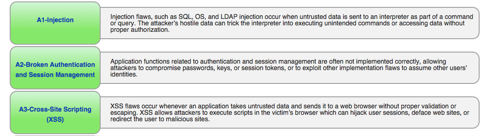
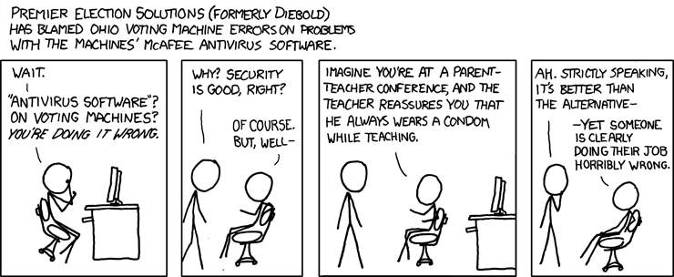

SQL Injection
http://lee.greens.io/sql_injection_slides/
Lee Green

image credit: http://xkcd.com/327
What is an injection vulnerability?
Vulnerabilities are present when user-supplied data ceases to be treated as data, and is executed in some fashion.
An attacker is said to have injected a command into the data stream, often by escaping or encoding it.
The manner of injection and execution is different for each type of vulnerability.
Code injection
- Cross-site scripting (XSS)
- eval, deserialization
Shell injection
- Shellshock
- 1995 CGI pages
SQL injection
- Vanilla SQL injection
- Blind SQL injection (incl. timing attacks)
Okay, but this is not a big deal, right?
Open Web Application Security Project
Top 10
results of SQL injection
- Unauthorized access
- Data loss or corruption
- Lack of accountability
- Denial of access
Preventing injection attacks
- Parameterized queries
- Whitelisting / Blacklisting
- Obfuscation of error messages
- Escaping special characters
Parameterized queries
- The most effective way to separate data from queries
- This should be your first choice every time
# bad.
m = Model.where("name = '#{params[:name]}'").first
# better.
m = Model.where('name = ?', params[:name]).first
m = Model.where(name: params[:name]).first
Whitelisting
- Can be applied in addition to parameterization of queries
valid_sorts = {
'name_asc' => 'name ASC',
'name_desc' => 'name DESC',
'color_asc' => 'color ASC',
'color_desc' => 'color DESC',
}
user_input = params[:sort]
# default to 'name ASC' on bad input
sort_key = valid_sorts[user_input] || 'name ASC'
order_clause = valid_sorts[sort_key]
Obfuscation of error messages
An error message can be the foothold that an attacker needs to hone in on a vulnerability.
We should never show the user an error message directly from the DB -- or a stacktrace!
Blacklisting or escaping
image credit: http://xkcd.com/463/
Finding injection vulnerabilities
- Brakeman gem
- Source code examination / review
- Testing / fuzzing
Our Process
- Find a vulnerability
- Prove the vulnerability
- Ensure the functionality is tested
- Fix the vulnerability
- Prove the vulnerability is fixed
Resources
- OWASP:
- https://www.owasp.org/index.php/Top_10_2013-Top_10
- http://railsgoat.cktricky.com/
- Brakeman : http://brakemanscanner.org/